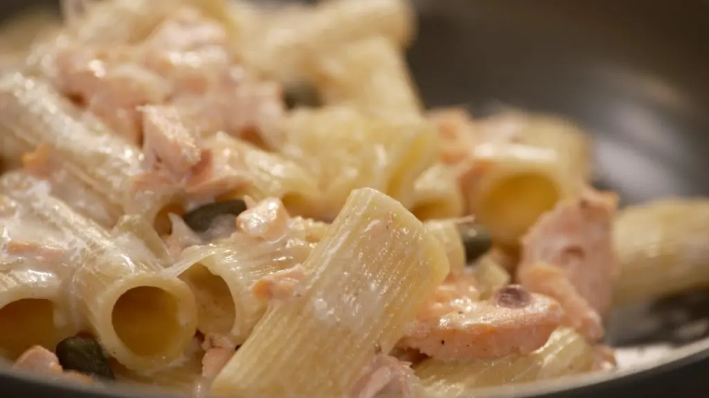

Pasta con salmón, vodka y alcaparras

Aprende a preparar esta receta de Pasta con salmón, vodka y alcaparras, por Julius Bienert
Ingredientes
- Rigatoni
- Lomo de salmón
- Mantequilla
- Chalota
- Vodka
- Nata
- Cuña de parmesano
- Aceite de oliva virgen extra
- Pimienta negra y sal
- Alcaparras
Preparación de la Receta
- Ponemos una olla con agua al fuego y añadimos una pizca de sal.
- Cocemos la pasta el tiempo que indique el fabricante.
- Salpimentamos los lomos de salmón y los doramos a la sartén.
- Añadimos un chorro de vodka y flambeamos.
- Cuando evapore todo el alcohol sacamos el salmón y lo reservamos.
- En esa misma sartén, agregamos mantequilla y doramos las chalotas bien picadas.
- Incorporamos el vodka y dejamos que evapore todo su alcohol.
- Agregamos la nata, el salmón desmigado previamente y enmantecar la pasta.
- Por último, emplatamos la pasta y agregamos parmesano y las alcaparras.
Volver